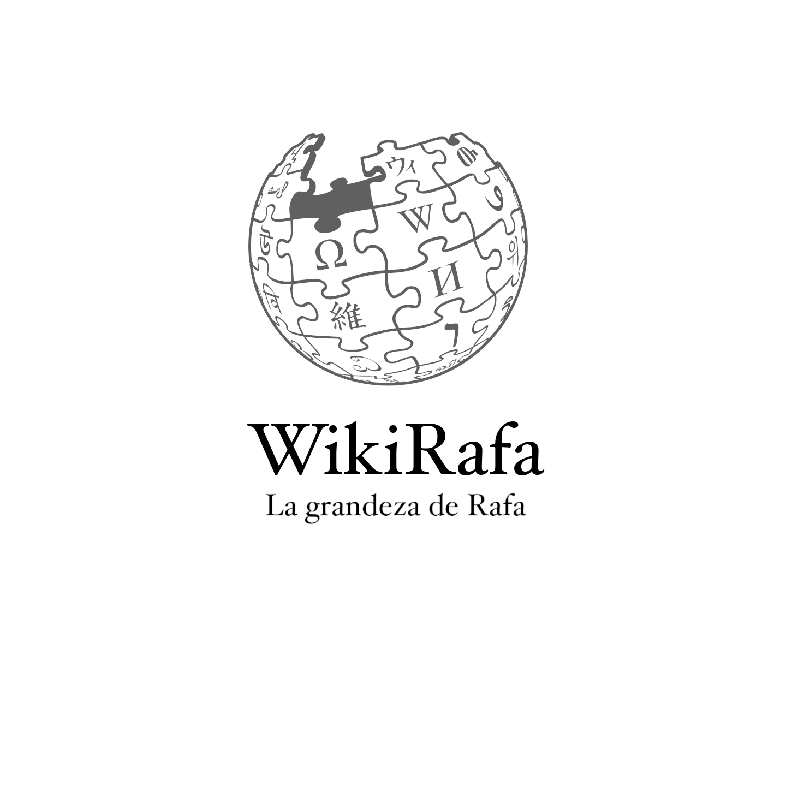

¿Qué es la WikiRafa...?
La verdadera pregunta es... ¿qué no es la WikiRafa...?
La WikiRafa lo es todo, pero si tuviésemos que reducirla a un solo concepto diríamos que la WikiRafa es la respuesta a la verdad.
WikiRafa es la realidad dentro de la verdad.
